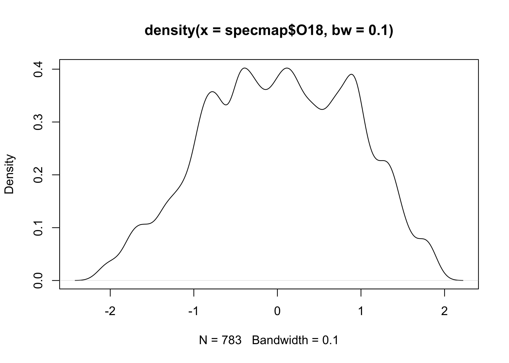
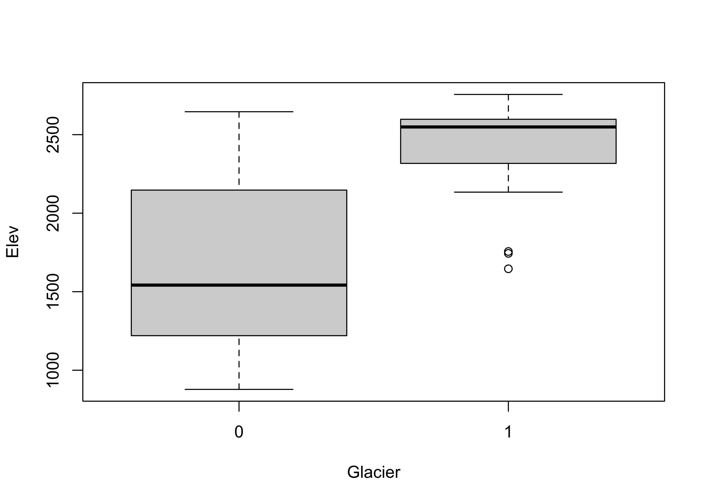

Using R: Examples
1 Introduction
The code and results below are aimed at demonstrating some of the basic uses of R to characterize data; it is not intended as a full tutorial, as provided by some of the online readings (particularly those in the Bookdown series). The examples use some relatively small data sets (by Earth-system science standards), in order to make it easy to replicate or play with the examples. (Dealing with larger data sets will come later.)
2 Reading data
The first step in the analysis of a data set, of course, is to read the data into R’s workspace, the contents of which are displayed in RStudio’s “Environment” tab. There are two basic sources for data to be read into R: 1) data (e.g. a .csv file or netCDF) on disk (or from the web), and 2) an existing R workspace (i.e. a *.RData) file that might contain, in addition to the input data, function or intermediate results, for example.
2.1 Read a .csv file
Although it is possible to browse to a particular file in order to open it (i.e. using the file.choose() function), for reproducibility, it’s better to explicitly specify the source (i.e. path) of the data. The following code reads a .csv file IPCC-RF.csv that contains radiative forcing values for various controls of global climate since 1750 CE, expressed in terms of Wm-2 contributions to the Earth’s preindustrial energy balance. The data can be downloaded from [https://pjbartlein.github.io/REarthSysSci/data/csv/IPCC-RF.csv] by right-clicking on the link, and saving to a suitable directory.
Here, the file is assumed to have been dowloaded to the folder /Users/bartlein/projects/geog490/data/csv_files/. (Note that this folder is not necessarly the default working directory of R, which can found using the function getwd())
Read the radiative forcing .csv file:
# read a .csv file
csv_path <- "/Users/bartlein/projects/geog490/data/csv_files/"
csv_name <- "IPCC-RF.csv"
csv_file <- paste(csv_path, csv_name, sep="")
IPCC_RF <- read.csv(csv_file)A quick look at the data can be gotten using the str() (“structure”) function, and a five number" (plus the mean) summary of the data can be gotten using the summary() function;
## 'data.frame': 262 obs. of 12 variables:
## $ Year : int 1750 1751 1752 1753 1754 1755 1756 1757 1758 1759 ...
## $ CO2 : num 0 -0.023 -0.024 -0.024 -0.025 -0.026 -0.026 -0.027 -0.028 -0.028 ...
## $ OtherGHG : num 0 0.004 0.006 0.007 0.008 0.01 0.011 0.013 0.014 0.015 ...
## $ O3Tropos : num 0 0 0.001 0.001 0.002 0.002 0.003 0.003 0.003 0.004 ...
## $ O3Stratos: num 0 0 0 0 0 0 0 0 0 0 ...
## $ Aerosol : num 0 -0.002 -0.004 -0.005 -0.007 -0.009 -0.011 -0.013 -0.014 -0.016 ...
## $ LUC : num 0 0 -0.001 -0.001 -0.002 -0.002 -0.002 -0.003 -0.003 -0.004 ...
## $ H2OStrat : num 0 0 0 0 0 0 0 0 0 0 ...
## $ BCSnow : num 0 0 0 0 0.001 0.001 0.001 0.001 0.001 0.001 ...
## $ Contrails: num 0 0 0 0 0 0 0 0 0 0 ...
## $ Solar : num 0 -0.014 -0.029 -0.033 -0.043 -0.054 -0.055 -0.048 -0.05 -0.102 ...
## $ Volcano : num -0.001 0 0 0 0 -0.664 0 0 0 0 ...## Year CO2 OtherGHG O3Tropos O3Stratos
## Min. :1750 Min. :-0.0290 Min. :0.00000 Min. :0.0000 Min. :-0.057000
## 1st Qu.:1815 1st Qu.: 0.1062 1st Qu.:0.03025 1st Qu.:0.0280 1st Qu.:-0.004750
## Median :1880 Median : 0.2230 Median :0.09000 Median :0.0695 Median : 0.000000
## Mean :1880 Mean : 0.4176 Mean :0.22302 Mean :0.1159 Mean :-0.007733
## 3rd Qu.:1946 3rd Qu.: 0.5990 3rd Qu.:0.27525 3rd Qu.:0.1535 3rd Qu.: 0.000000
## Max. :2011 Max. : 1.8160 Max. :1.01500 Max. :0.4000 Max. : 0.000000
## Aerosol LUC H2OStrat BCSnow Contrails
## Min. :-0.9220 Min. :-0.15000 Min. :0.00000 Min. :0.00000 Min. :0.000000
## 1st Qu.:-0.3770 1st Qu.:-0.09475 1st Qu.:0.00400 1st Qu.:0.00925 1st Qu.:0.000000
## Median :-0.2320 Median :-0.05050 Median :0.01100 Median :0.02300 Median :0.000000
## Mean :-0.3130 Mean :-0.06323 Mean :0.02098 Mean :0.02490 Mean :0.004073
## 3rd Qu.:-0.1165 3rd Qu.:-0.02600 3rd Qu.:0.03200 3rd Qu.:0.04000 3rd Qu.:0.001000
## Max. : 0.0000 Max. : 0.00000 Max. :0.07300 Max. :0.05100 Max. :0.050000
## Solar Volcano
## Min. :-0.11200 Min. :-11.6290
## 1st Qu.:-0.03600 1st Qu.: -0.2875
## Median :-0.00600 Median : -0.0750
## Mean : 0.00584 Mean : -0.4126
## 3rd Qu.: 0.03225 3rd Qu.: -0.0250
## Max. : 0.19400 Max. : 0.0000There are other ways of getting a quick look at the data set:
## [1] "data.frame"## [1] "Year" "CO2" "OtherGHG" "O3Tropos" "O3Stratos" "Aerosol" "LUC" "H2OStrat"
## [9] "BCSnow" "Contrails" "Solar" "Volcano"## Year CO2 OtherGHG O3Tropos O3Stratos Aerosol LUC H2OStrat BCSnow Contrails Solar Volcano
## 1 1750 0.000 0.000 0.000 0 0.000 0.000 0 0.000 0 0.000 -0.001
## 2 1751 -0.023 0.004 0.000 0 -0.002 0.000 0 0.000 0 -0.014 0.000
## 3 1752 -0.024 0.006 0.001 0 -0.004 -0.001 0 0.000 0 -0.029 0.000
## 4 1753 -0.024 0.007 0.001 0 -0.005 -0.001 0 0.000 0 -0.033 0.000
## 5 1754 -0.025 0.008 0.002 0 -0.007 -0.002 0 0.001 0 -0.043 0.000
## 6 1755 -0.026 0.010 0.002 0 -0.009 -0.002 0 0.001 0 -0.054 -0.664## Year CO2 OtherGHG O3Tropos O3Stratos Aerosol LUC H2OStrat BCSnow Contrails Solar Volcano
## 257 2006 1.684 0.981 0.395 -0.052 -0.909 -0.15 0.071 0.04 0.042 -0.016 -0.075
## 258 2007 1.711 0.986 0.396 -0.052 -0.907 -0.15 0.071 0.04 0.044 -0.017 -0.125
## 259 2008 1.736 0.992 0.398 -0.051 -0.904 -0.15 0.072 0.04 0.046 -0.025 -0.100
## 260 2009 1.762 0.999 0.399 -0.051 -0.902 -0.15 0.072 0.04 0.044 -0.027 -0.100
## 261 2010 1.789 1.005 0.400 -0.050 -0.900 -0.15 0.072 0.04 0.048 0.001 -0.100
## 262 2011 1.816 1.015 0.400 -0.050 -0.900 -0.15 0.073 0.04 0.050 0.030 -0.100The class() function indicates that the .csv file exists in R’s workspace as a data.frame object, the names() function lists the names of the variables (columns) in the data frame, and head() and tail() list the first and last few rows in the dataframe.
2.2 Load a saved .RData file (from the web)
An alternative way of reading data is to read in an entire workspace (*.RData) at once. The following code reads those data from the web, by opening a “connection” to a URL, and then using the load() function (which also can be used to load a workspace file from a local folder).
# load data from a saved .RData file
con <- url("https://pjbartlein.github.io/REarthSysSci/data/RData/geog490.RData")
load(file=con)
close(con) Note how the “Environment” tab in RStudio has become populated with individual objects.
3 Simple visualization
There are three properties of any variable that can be used to describe the values variable: 1) the location of the values along the number line, also referred to as the central tendency; 2) the scale of the values–how spread out they are; and 3) the distribution of the values (i.e. evenly spread out vs. clumped, vs. regularly spaced, for example). These properties can be displayed by univariate plots, of which there are two kinds, enumerative and summary.
3.1 Univariate enumerative plots
Univariate enumerative plots show individual values, and under some conditions, the data can be reconstructed from the plots in detail.
3.1.1 Index plots
Index plots are simple plots that display individual observations of a particular variable, in the order the values appear in the dataframe. In this example, the data are oxygen-isotope values for the past approximately 800 kyr (O18), that provide an index of the amount of ice on the land (with, as it happens, negative values indicating little ice, and positive values indicating lots of ice). Another variable in the data set is Insol (insolation), or the amount of incoming solar radiation at 65oN. The “full” names of these variables are specmap$O18 and specmap$Insol, but they can be referred to by their simple column names using the attach() function. Plot the O18 values:
3.1.2 Time-series plots
The specmap data values happen to be spaced at 1 kyr intervals. A second plot can be generated that makes the x-axis scale explicity Age in the data set. The ylim “argument” in the function call flips the y-axis (so that “warm” is at the top), and the pch argument speifies thea we want small filled dots (as opposed to the default open circles):
Although these plots could be used to get a sense of those properties listed above, they’re not very efficient in doing so.
3.1.3 Stripcharts
Stripcharts plot the individual values of a variable along a (number) line.
As can be easily seen, there is a lot of “overplotting”, which obscures one’s ability to see the distribution of values. A second stripchar can be generated that “stacks” duplicate (or nearly so) values on top of one another:
# stacked stripchart
stripchart(O18, method="stack", pch=16, cex=0.5) # stack points to reduce overlapNote the use of the method, pch (plotting character), and cex (character-size exaggeration) arguments that modify the basic stripchart. The stacked stripchart gives the impression that the O18 values are not uniformly distributed along the number line.
Note that the index and time-series plots could be used to reproduce the data with a little ruler work (including the order of the values in the dataframe), while the stripchart could reprouce the values, but the order is lost.
3.2 Univariate summary plots
Univariate summary plots, as the name suggests, summarize the variable values, and while the plots provide information on the three properties describe above, they can’t be used to reconstruct the individual values.
3.2.1 Histograms
The histogram is basically a graphical representation of a frequency table, that itself displays the counts of values sorted into size-category bins. Here is the default histogram for O18:
Note that the bin-widths are pretty big, and the default histogram gives only a large-scale overview of the distribution of the the data. The breaks argument can be used to control the number of bins, and hence the “details” of the distribution (as will as the location and scale of the data):
In this eample, the histogram with smaller bin-widths suggests that the oxygen-isotope values might have mulltiple modes or peaks in the distribution.
3.2.2 Density plots
Density plots are can be thought of a “smoothed” histograms, and while sometimes regarded as an “automatic” method for not having to make decisions about the width of the histogram bins, still requires a choice of “bandwidth”. Here’s the default density plot. Note that the density() function is used to creat an object called O18_density (which stores the values generated by density(), where the compound symbol <- is read as “gets”). The bandwidth used in creating the density plot is listed (along with some summary information) by simply “typing” the O18_density object at the command line. Then, the O18_density object is plotted using the plot() function:
##
## Call:
## density.default(x = specmap$O18)
##
## Data: specmap$O18 (783 obs.); Bandwidth 'bw' = 0.2084
##
## x y
## Min. :-2.745 Min. :0.0000682
## 1st Qu.:-1.423 1st Qu.:0.0369725
## Median :-0.100 Median :0.1747000
## Mean :-0.100 Mean :0.1888379
## 3rd Qu.: 1.223 3rd Qu.:0.3469175
## Max. : 2.545 Max. :0.3803128
Here’s an alternative density plot with a smaller bandwidth:
# density plot, different bandwidth
O18_density <- density(specmap$O18, bw = 0.10)
plot(O18_density)
Before going on, it’s good practice to “detach” the data frame:
3.2.3 Boxplots
Boxplot (or box-and-whisker) plots provide a graphical representation of the “five-number” statistics for a variable (i.e. minimum, 25th percentile, median, 75th percentile, and maximum), with the interquartile range (the 75th percentile minue the 25th percentile) indicated by the height of the box (or width, depending on the orientation of the boxplot). The data set here is a dataframe of the locations of cirque basins in Oregon, with two indictor variables or factors: the region, and a binary variable Glacier indicating whether or not a cirque basin is currently (early 2000’s CE) occupied by a glacier. First, attach the dataframe and get the names of the variables.
## [1] "Cirque" "Lat" "Lon" "Elev" "Region" "Glacier"Get the boxplot of cirque elevations:

Now get side-by-side boxplots of not-glaciated and glaciated cirques:

Glaciated cirques evidently occur at higher elevations than not-glaciated ones.
Get a simple map of the cirque locations by plotting longitude and latitude, labeling the points to indicate whether a particular cirque is occupied or not:
3.3 Bivariate plots
The “map” above is an example of the workhorse of bivariate plots–the scatterplot or scatter diagram (as were the index and time-series plots above). In addition to showing the strength and sense (positive or negative) of bivariate relationships, the labeling of points can be used to convey additional information.
3.3.1 Scatter diagrams
Plot cirque longitude along the x-axis, and latitude along the y-axis:
Note the convention above in the plot() function: the x-variable is listed first, than the y-variable. Replot the data, this time labeling the points. Note the different way of specifying the variables: The y-variable first, then a tilde (read as “varies with”), then the x-variable. Note also the plotting character (pch), and the nested as.factor() variable-type conversion function:
# cirques: Elev vs. Lon
plot(Elev ~ Lon, type="n")
points(Elev ~ Lon, pch=16, col=as.factor(Glacier))It’s easy to see that glaciated cirques are clustered in two areas: the high Cascades and the Wallows (in eastern Oregon).
3.3.2 Scatterplot matrices
Relationships between several variables can be visualized using scatterplot matrices. The data here consist of several variables observed at Oregon climate stations. (Note that the second panel in the first row provides a map.)
## [1] "station" "lat" "lon" "elev" "tjan" "tjul" "tann" "pjan" "pjul" "pann"
## [11] "idnum" "Name" "y" "x"4 Enhanced graphics
The base graphics in R can be quickly produced, but are kind of crude and not “camera-ready” (an archaic term, like “dialing”" a telephone, from the days when illustrations were drawn on paper). The R package ggplot2 by Hadley Wickham provides an alternative approach to the “base” graphics in R for constructing plots and maps, and is inspired by Lee Wilkinson’s The Grammar of Graphics book (Springer, 2nd Ed. 2005). The basic premise of the Grammar of Graphics book, and of the underlying design of the package, is that data graphics, like a language, are built upon some basic components that are assembled or layered on top of one another. In the case of English (e.g Garner, B., 2016, The Chicago Guide to Grammar, Usage and Punctuation, Univ. Chicago Press), there are eight “parts of speech” from which sentences are assembled:
- Nouns (e.g. computer, classroom, data, …)
- Pronouns (e.g. he, she, they, …)
- Adjectives (e.g. good, green, my, year-to-year, …, including articles, e.g. a, the)
- Verbs (e.g. analyze, write, discuss, computing, …)
- Adverbs (e.g. “-ly” words, very, loudly, bigly, near, far, …)
- Prepositions (e.g. on, in, to, …)
- Conjunctives (e.g. and, but, …)
- Interjections (e.g. damn)
(but as Garner notes, those categories “aren’t fully settled…” p. 18).
In the case of graphics (e.g. Wickham, H., 2016, ggplot2 – Elegant Graphics for Data Analysis, 2nd. Ed., Springer, available online from [http://library.uoregon.edu]) the components are:
- Data (e.g. in a dataframe)
- Coordinate Systems (the coordinate system of a plot)
- Geoms and their “aesthetic mappings” (the geometric objects like points, lines, polygons that represent the data)
These functions return Layers (made up of geometric elements) that build up the plot. In addition, plots are composed of
- Stats (or “statistical transformations”, i.e. curves)
- Scales (that map data into the “aesthetic space”, i.e. axes and legends)
- Faceting (e.g subsets of data in individual plots)
- Legends and
- Themes (that control things like background colors, fonts, etc.) plus a few other things.
Begin by loading the ggplot2 library.
The following code chunks reproduce using ggplot2 some of the plots described earlier. (Note that while the package is called ggplot2 the function is still ggplot().)
# ggplot2 boxplots
ggplot(cirques, aes(x = Glacier, y=Elev, group = Glacier)) + geom_boxplot() +
geom_point(colour = "blue")The following plot is a plot of the relationship between elevation and annual temperature in the Oregon climate-station data set, with a “loess” curve added to summarize the relationship.
## ggplot2 scatter diagram of Oregon climate-station data
ggplot(orstationc, aes(elev, tann)) + geom_point() + geom_smooth(color = "blue") +
xlab("Elevation (m)") + ylab("Annual Mean Temperature (C)") +
ggtitle("Oregon Climate Station Data")## `geom_smooth()` using method = 'loess' and formula 'y ~ x'5 Maps in R
The display of high resolution data (in addition to the standard approach of simply mapping it) can be illustrated using a set of climate station data for the western United States, consisting of 3728 observations of 15 variables. Although these data are not of extremely high resolution (or high dimension), they illustrate the general ideas.
Begin by loading the appropriate packages. The data and shapefiles are in the geog490.RData file.
5.1 Simple maps
Here’s a simple map of the station locations. The following code produces a standard map with the stations represented by dots. (There is a lot of symbol overplotting – one technique to avoid overplotting would be to simply reduce the character size using the cex argument, but then the points may disappear. A better approach is described later.)
# load packages
library(maptools) # loads sp library too
library(rgeos)
library(RColorBrewer) # creates nice color schemes
library(classInt) # finds class intervals for continuous variables
# map of precipitation stations
plot(wus_shp, lwd=3, col="gray")
points(wus_pratio$lon, wus_pratio$lat, pch=16, cex=0.8)
In what follows, we’ll want to examine the large-scale patterns of the seasonality (summer-wet vs. winter-wet) of precipitation. The data consist of monthly precipitation ratios, or the average precipitation for a particular month and station divided by the average annual total precipitation. This has the effect of removing the very large imprint of elevation on precipitation totals. The ratio of July to January precipitation provides a single overall description of precipitation seasonality.
# a second map with some colors
wus_pratio$pjulpjan <- wus_pratio$pjulpann/wus_pratio$pjanpann # pann values cancel out
nclr <- 10
plotclr <- brewer.pal(nclr,"PRGn")
class <- classIntervals(wus_pratio$pjulpjan, nclr, style="fixed",
fixedBreaks=c(9999.0, 10.0, 5.0, 2.0, 1.25, 1.0, .800, .500, .200,
.100, 0.0))
colcode <- findColours(class, plotclr)
plot(wus_shp)
points(wus_pratio$lon, wus_pratio$lat, pch=16, col=colcode, main="Jan/Jul Precipitation")
legend(-125,33.5, legend=names(attr(colcode, "table")),
fill=attr(colcode, "palette"), cex=0.5, bty="n")
5.2 ggplot2 maps
It’s possible to generate maps that are a little closer to “camera ready” using ggplot2. The package has the capability of extracting outlines from the maps package in R (and also to do some simple projection using the mapproj package). Here’s an example of a map of the western states, first extracting the outlines, and then plotting them:
# get western state outlines from `maps` package
wus_states <- map_data("state", region = c("washington", "oregon", "california", "idaho", "nevada",
"montana", "utah", "arizona", "wyoming", "colorado", "new mexico", "north dakota", "south dakota",
"nebraska", "kansas", "oklahoma", "texas"))
head(wus_states)## long lat group order region subregion
## 1 -114.6374 35.01918 1 1 arizona <NA>
## 2 -114.6431 35.10512 1 2 arizona <NA>
## 3 -114.6030 35.12231 1 3 arizona <NA>
## 4 -114.5744 35.17961 1 4 arizona <NA>
## 5 -114.5858 35.23690 1 5 arizona <NA>
## 6 -114.5973 35.28274 1 6 arizona <NA># plot the western states outlines
ggplot(wus_states, aes(long, lat)) + geom_polygon(aes(group = group), color = "gray50", fill = NA) +
coord_quickmap() + theme_bw()
Note the use of theme_bw() to get a traditional black-lines-on-white-background.
Here’s a ggplot2 map of the the July:January precipitation ratio. Note that the data are first tranformed from “continuous” to categorical or “factor” data, which facilitates making a map with a descrete color scale.
# recode pjulpjan to a factor
cutpts <- c(0.0, .100, .200, .500, .800, 1.0, 1.25, 2.0, 5.0, 10.0, 9999.0)
pjulpjan_factor <- factor(findInterval(wus_pratio$pjulpjan, cutpts))
head(cbind(wus_pratio$pjulpjan, pjulpjan_factor, cutpts[pjulpjan_factor]))## pjulpjan_factor
## [1,] 0.43465046 3 0.2
## [2,] 1.15409836 6 1.0
## [3,] 0.05609915 1 0.0
## [4,] 0.26222597 3 0.2
## [5,] 0.05042017 1 0.0
## [6,] 0.14257556 2 0.1Next, the map:
## ggplot2 map of pjulpjan
ggplot(wus_pratio, aes(lon, lat)) +
geom_polygon(aes(long, lat, group = group), wus_states, color = "gray50", fill = NA) +
scale_color_brewer(type = "div", palette = "PRGn", aesthetics = "color", direction = 1,
labels = c("0.0 - 0.1", "0.1 - 0.2", "0.2 - 0.5", "0.5 - 0.8", "0.8 - 1.0",
"1.0 - 1.25", "1.25 - 2.0", "2.0 - 5.0", "5.0 - 10.0", "> 10.0"),
name = "Jul:Jan Ppt. Ratio") +
geom_point(aes(lon, lat, color = pjulpjan_factor), size = 1.0 ) +
coord_quickmap() + theme_bw()
6 Descriptive statistics
Descriptive statistics as one might expect, are numerical (i.e. statistics) summaries of the properties of individual variables, or of the relatinships among variables. Below are a few examples.
6.1 Univariate statistics
The summary() function provides that “five-number” (plus the mean) summary:
## lat lon elev pjanpann pfebpann
## Min. :25.90 Min. :-124.57 Min. : -59.0 Min. :0.01010 Min. :0.00830
## 1st Qu.:34.73 1st Qu.:-115.32 1st Qu.: 317.0 1st Qu.:0.02830 1st Qu.:0.02940
## Median :39.22 Median :-105.89 Median : 672.0 Median :0.05270 Median :0.05645
## Mean :39.18 Mean :-107.38 Mean : 844.1 Mean :0.07529 Mean :0.07167
## 3rd Qu.:43.67 3rd Qu.: -98.88 3rd Qu.:1307.2 3rd Qu.:0.10880 3rd Qu.:0.09390
## Max. :49.00 Max. : -93.57 Max. :3450.0 Max. :0.25350 Max. :0.27050
## pmarpann paprpann pmaypann pjunpann pjulpann
## Min. :0.01160 Min. :0.00880 Min. :0.00670 Min. :0.00000 Min. :0.00000
## 1st Qu.:0.06218 1st Qu.:0.06638 1st Qu.:0.06875 1st Qu.:0.04927 1st Qu.:0.04780
## Median :0.07950 Median :0.08140 Median :0.12270 Median :0.10460 Median :0.08330
## Mean :0.08684 Mean :0.07899 Mean :0.11024 Mean :0.09653 Mean :0.08717
## 3rd Qu.:0.10110 3rd Qu.:0.09370 3rd Qu.:0.14752 3rd Qu.:0.13950 3rd Qu.:0.13140
## Max. :0.24120 Max. :0.15540 Max. :0.22950 Max. :0.24720 Max. :0.24650
## paugpann pseppann poctpann pnovpann pdecpann
## Min. :0.00000 Min. :0.00590 Min. :0.01670 Min. :0.02100 Min. :0.01170
## 1st Qu.:0.04988 1st Qu.:0.06190 1st Qu.:0.06320 1st Qu.:0.04870 1st Qu.:0.03290
## Median :0.08855 Median :0.08700 Median :0.07710 Median :0.06840 Median :0.05800
## Mean :0.08546 Mean :0.08224 Mean :0.07894 Mean :0.07605 Mean :0.07048
## 3rd Qu.:0.11532 3rd Qu.:0.10200 3rd Qu.:0.09310 3rd Qu.:0.09390 3rd Qu.:0.10115
## Max. :0.27530 Max. :0.23530 Max. :0.18090 Max. :0.18300 Max. :0.19800
## pjulpjan
## Min. : 0.0000
## 1st Qu.: 0.4995
## Median : 1.5301
## Mean : 2.6314
## 3rd Qu.: 4.5072
## Max. :16.2167The tapply() function can be used to get statistics by group, in this case for the July:January precipitation-ratio categories:
## $`1`
## Min. 1st Qu. Median Mean 3rd Qu. Max.
## 2.0 61.5 204.0 408.3 638.5 2438.0
##
## $`2`
## Min. 1st Qu. Median Mean 3rd Qu. Max.
## -55.00 63.25 392.50 630.62 1178.75 2940.00
##
## $`3`
## Min. 1st Qu. Median Mean 3rd Qu. Max.
## -59.0 460.0 866.0 937.9 1346.0 2664.0
##
## $`4`
## Min. 1st Qu. Median Mean 3rd Qu. Max.
## -18.0 128.0 811.0 868.1 1414.0 3448.0
##
## $`5`
## Min. 1st Qu. Median Mean 3rd Qu. Max.
## 2.0 118.2 496.0 863.7 1610.5 3243.0
##
## $`6`
## Min. 1st Qu. Median Mean 3rd Qu. Max.
## 2.0 178.0 335.0 837.5 1539.0 3450.0
##
## $`7`
## Min. 1st Qu. Median Mean 3rd Qu. Max.
## 6.0 282.8 531.5 937.0 1649.8 3240.0
##
## $`8`
## Min. 1st Qu. Median Mean 3rd Qu. Max.
## 98 468 910 1028 1460 3054
##
## $`9`
## Min. 1st Qu. Median Mean 3rd Qu. Max.
## 241.0 488.0 682.5 827.3 1055.0 2758.0
##
## $`10`
## Min. 1st Qu. Median Mean 3rd Qu. Max.
## 454 725 990 1089 1512 1874There are a number of potential descriptive statistics than can be calculated this way (as well as individually for ungrouped data). Others statical funcions include min(), max(), range(), sum(), mean(), median(), quantiles(), weighted.mean(), sd(), etc.
A graphical approach to the above is boxplots:
ggplot(wus_pratio, aes(x = pjulpjan_factor, y=elev, group = pjulpjan_factor)) + geom_boxplot() +
scale_x_discrete(labels = c("0.0 - 0.1", "0.1 - 0.2", "0.2 - 0.5", "0.5 - 0.8", "0.8 - 1.0",
"1.0 - 1.25", "1.25 - 2.0", "2.0 - 5.0", "5.0 - 10.0", "> 10.0"),
name = "PJul:PJan Ppt. Ratio") +
geom_point(colour = "blue")6.2 Bivariate descriptive statistics (correlations)
The main statistic for characterizing the strength and sense of the relationship between two variables is the correlation coefficient, but beware that the statistic is a measure of the liner relationship between variables. Here is a correlation matric for the western U.S. precipitation ratio data set:
## lat lon elev pjanpann pfebpann pmarpann paprpann pmaypann pjunpann pjulpann paugpann
## lat 1.000 -0.341 0.153 -0.039 -0.150 -0.113 0.352 0.233 0.257 0.080 -0.176
## lon -0.341 1.000 -0.170 -0.802 -0.727 -0.612 0.321 0.640 0.693 0.589 0.513
## elev 0.153 -0.170 1.000 -0.151 -0.178 -0.146 0.042 0.071 -0.034 0.308 0.351
## pjanpann -0.039 -0.802 -0.151 1.000 0.966 0.844 -0.445 -0.825 -0.849 -0.796 -0.690
## pfebpann -0.150 -0.727 -0.178 0.966 1.000 0.892 -0.439 -0.811 -0.841 -0.788 -0.672
## pmarpann -0.113 -0.612 -0.146 0.844 0.892 1.000 -0.195 -0.658 -0.771 -0.716 -0.649
## paprpann 0.352 0.321 0.042 -0.445 -0.439 -0.195 1.000 0.707 0.490 0.073 -0.162
## pmaypann 0.233 0.640 0.071 -0.825 -0.811 -0.658 0.707 1.000 0.875 0.494 0.280
## pjunpann 0.257 0.693 -0.034 -0.849 -0.841 -0.771 0.490 0.875 1.000 0.638 0.417
## pjulpann 0.080 0.589 0.308 -0.796 -0.788 -0.716 0.073 0.494 0.638 1.000 0.868
## paugpann -0.176 0.513 0.351 -0.690 -0.672 -0.649 -0.162 0.280 0.417 0.868 1.000
## pseppann -0.336 0.674 0.132 -0.733 -0.699 -0.734 -0.023 0.429 0.509 0.595 0.694
## poctpann -0.355 0.416 0.003 -0.395 -0.385 -0.442 0.057 0.170 0.122 0.105 0.232
## pnovpann 0.112 -0.648 -0.220 0.734 0.651 0.550 -0.177 -0.605 -0.690 -0.787 -0.719
## pdecpann 0.021 -0.769 -0.208 0.894 0.832 0.668 -0.403 -0.774 -0.804 -0.811 -0.698
## pjulpjan 0.194 0.565 0.095 -0.733 -0.702 -0.578 0.282 0.600 0.717 0.840 0.628
## pseppann poctpann pnovpann pdecpann pjulpjan
## lat -0.336 -0.355 0.112 0.021 0.194
## lon 0.674 0.416 -0.648 -0.769 0.565
## elev 0.132 0.003 -0.220 -0.208 0.095
## pjanpann -0.733 -0.395 0.734 0.894 -0.733
## pfebpann -0.699 -0.385 0.651 0.832 -0.702
## pmarpann -0.734 -0.442 0.550 0.668 -0.578
## paprpann -0.023 0.057 -0.177 -0.403 0.282
## pmaypann 0.429 0.170 -0.605 -0.774 0.600
## pjunpann 0.509 0.122 -0.690 -0.804 0.717
## pjulpann 0.595 0.105 -0.787 -0.811 0.840
## paugpann 0.694 0.232 -0.719 -0.698 0.628
## pseppann 1.000 0.565 -0.643 -0.687 0.386
## poctpann 0.565 1.000 -0.106 -0.240 -0.101
## pnovpann -0.643 -0.106 1.000 0.897 -0.717
## pdecpann -0.687 -0.240 0.897 1.000 -0.776
## pjulpjan 0.386 -0.101 -0.717 -0.776 1.000A graphical depiction of a correlation matrix can be generated using the corrplot() function:
## corrplot 0.84 loaded7 Descriptive plots for high-dimension or high-resolution data
High dimension (lots of variables) or high-resolution (lots of observations) generate a number of issues in simply visualizing the data, and relationships among variables. Here are two approaches, the use of transparency in standard plots, and parallel coordiate plots (which also use transparency) to visualize all observations of all variables in a single image.
7.1 Transparency
A simple scatter plot (below, left) showing the relationship between January and July precipitation ratios illustrates how the crowding of points makes interpretation difficult. The crowding can be overcome by plotting transparent symbols specified using the “alpha channel” of the color for individual points (below, right).
# plot January vs. July precipitation ratios
opar <- par(mfcol=c(1,2)) # save graphics parameters
# opaque symbols
plot(wus_pratio$pjanpann, wus_pratio$pjulpann, pch=16, cex=1.25, col=rgb(1,0,0))
# transparent symbols
plot(wus_pratio$pjanpann, wus_pratio$pjulpann, pch=16, cex=1.25, col=rgb(1,0,0, .2))When there are a lot of points, sometimes the graphics capability of the GUIs are taxed, and it is more efficient to make a .pdf image directly.
# transparent symbols using the pdf() device
pdf(file="highres_enhanced_plot01.pdf")
plot(wus_pratio$pjanpann, wus_pratio$pjulpann, pch=16, cex=1.25, col=rgb(1,0,0, .2))
dev.off()It’s easy to see how the transparency of the symbols provides a visual measure of the density of points in the various regions in the space represented by the scatter plot.
Over the region as a whole, the interesting question is the roles location and elevation may play in the seasonality of precipitation. The following plots show that the dependence of precipitation seasonality on elevation is rather complicated.
# seasonal precipitation vs. elevation
opar <- par(mfcol=c(1,3)) # save graphics parameters
plot(wus_pratio$elev, wus_pratio$pjanpann, pch=16, col=rgb(0,0,1, 0.1))
plot(wus_pratio$elev, wus_pratio$pjulpann, pch=16, col=rgb(0,0,1, 0.1))
plot(wus_pratio$elev, wus_pratio$pjulpjan, pch=16, col=rgb(0,0,1, 0.1))7.2 Parallel-coordinate plots
Parallel coordiate plots in a sense present an individual axis for each variable in a dataframe along which the individual values of the variable are plotted (usually rescaled to lie between 0 and 1), with the points for a particular observation joined by straight-line segments. Usually the points themselves are not plotted to avoid clutter. Parallel coordinate plots can be generated using the GGally package. Here’s a parallel coordinate plot for the western U.S. precipitation-ratio data:
# load library
library(GGally)
library(gridExtra)
# parallel coordinate plot
ggparcoord(data = wus_pratio,
scale = "uniminmax", alphaLines = 0.05) + ylab("") +
theme(axis.text.x = element_text(angle=315, vjust=1.0, hjust=0.0, size=10),
axis.title.x = element_blank(),
axis.text.y = element_blank(), axis.ticks.y = element_blank() )
Note the use of transparency, specified by the alphaLines argument. Individual observations (stations) that have similar values for each variable trace out dense bands of lines, and several distinct bands, corresponding to different “precipitation regimes” (typical seasonal variations) can be observed.
Parallel coordinate plots are most effective when paired with another display with points highlighted in one display similarly highlighted in the other. In the case of the western U.S. data the logical other display is a map. There are (at least) two ways of doing the highlighting. Here, and “indicator variable” is defined using latitude and longitude limits, and the points within those limits appear in read on both plots.
# lon/lat window
lonmin <- -125.0; lonmax <- -120.0; latmin <- 42.0; latmax <- 49.0
lon <- wus_pratio$lon; lat <- wus_pratio$lat
wus_pratio$select_pts <- factor(ifelse(lat >= latmin & lat <= latmax & lon >= lonmin & lon <= lonmax, 1, 0))
# pcp
a <- ggparcoord(data = wus_pratio[order(wus_pratio$select_pts),],
columns = c(1:16), groupColumn = "select_pts",
scale = "uniminmax", alphaLines=0.1) + ylab("") +
theme(axis.text.x = element_text(angle=315, vjust=1.0, hjust=0.0, size=8),
axis.title.x = element_blank(),
axis.text.y = element_blank(), axis.ticks.y = element_blank(),
legend.position = "none") +
scale_color_manual(values = c(rgb(0, 0, 0, 0.2), "red"))
# map
b <- ggplot(wus_pratio, aes(lon, lat)) +
geom_polygon(aes(long, lat, group = group), wus_states, color = "gray50", fill = NA) +
geom_point(aes(lon, lat, color = select_pts), size = 0.8 ) +
theme_bw() +
theme(legend.position = "none") +
coord_quickmap() + scale_color_manual(values = c("gray", "red"))
grid.arrange(a, b, nrow = 1)
The points in western Oregon and wesetern Washington clearly have a winter-wet precipitation regime. A second highlighting approach is to select observations according to a particular range of values for a variable. Here points with wet Augusts (e.g. points with an August:Annual precipition ratio greater than 0.5) are selected, and highlighted in the parallel coordinates plot and location map:
# variable-value selection
cutpoint <- 0.5
v <- wus_pratio$paugpann
v <- (v-min(v))/(max(v)-min(v))
wus_pratio$select_pts <- factor(ifelse(v >= cutpoint, 1, 0))
# pcp
a <- ggparcoord(data = wus_pratio[order(wus_pratio$select_pts),],
columns = c(1:16), groupColumn = "select_pts",
scale = "uniminmax", alphaLines=0.1) + ylab("") +
theme(axis.text.x = element_text(angle=315, vjust=1.0, hjust=0.0, size=8),
axis.title.x = element_blank(),
axis.text.y = element_blank(), axis.ticks.y = element_blank(),
legend.position = "none") +
scale_color_manual(values = c(rgb(0, 0, 0, 0.2), "red"))
# map
b <- ggplot(wus_pratio, aes(lon, lat)) +
geom_polygon(aes(long, lat, group = group), wus_states, color = "gray50", fill = NA) +
geom_point(aes(lon, lat, color = select_pts), size = 0.8 ) +
theme_bw() +
theme(legend.position = "none") +
coord_quickmap() + scale_color_manual(values = c("gray", "red"))
grid.arrange(a, b, nrow = 1, ncol = 2)
The North American Monsoon region is clearly depicted.